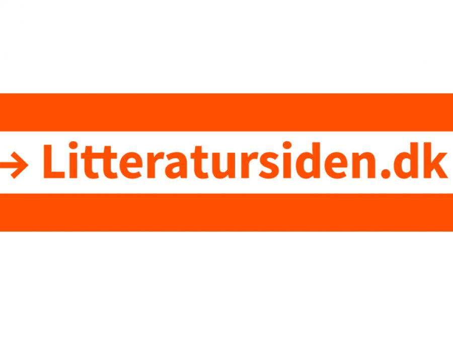
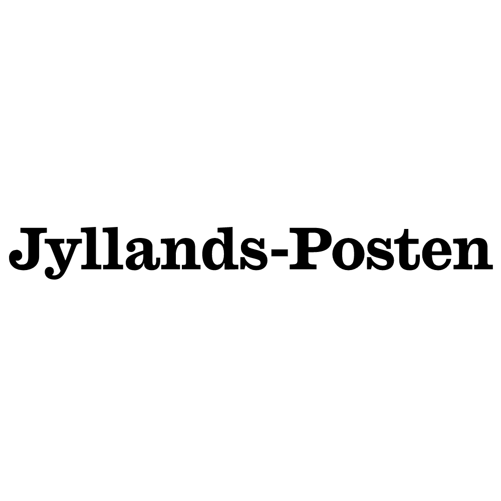

Peter Øvig2019Mads Damsø
Litteratursiden [acSource]
[Artikel]
Peter Øvig
(2019)
Mads Damsø
Peter Øvig er optaget af at undersøge, hvad der får mennesker til at overskride samfundets normer, og han aktualiserer fortidens begivenheder med årsagsforklaringer og sans for spænding. Peter Øvig ...
Emneord: Forfatterportrætter ; Peter Øvig Knudsen ; danske forfattere ; danske forfattere 1950 til idag ; nyere danske forfattere ; Peter Øvig
- Sprog
- Dansk
- Genre
- forfatterportræt
- Forlag
- Litteratursiden
- Målgruppe
- voksenmaterialer
News Desk2019Celeste Peterson-Sloss
Computers in Libraries, Mar2019, Vol. 39 Issue 2, p28 [isPartOfISSN]
[Artikel]
News Desk
(2019)
celeste peterson-sloss
The article offers library-related news briefs. It includes the acquisition of cloud software provider NextTier Education by Follett, EBSCO Information Services' acquisition of the bibliographic database Linguistics Abstracts Online from Wiley, and the merger of technology providers Eduserv and Jisc.
Emneord: CONSOLIDATION & merger of corporations ; ELECTRONIC publishing ; LIBRARIES ; PEER review (Professional performance) ; PRESS ; PUBLISHERS & publishing ; OPEN access publishing
- Sprog
- Engelsk
- Forlag
- Ebsco Masterfile
- Målgruppe
- voksenmaterialer
- Findes i
- Computers in Libraries, Mar2019, Vol. 39 Issue 2, p28
Hvis man bruger det, som står i Barnets Lov, i skilsmissesager, vil det være en katastrofe2020Olav Hergel
Politiken, 2020-07-16 [isPartOfISSN]
[Avisartikel]
Hvis man bruger det, som står i Barnets Lov, i skilsmissesager, vil det være en katastrofe
(2020)
Olav Hergel
Regeringen vil fjerne flere børn fra forældre, der ikke magter opgaven. Det kritiseres af fagfolk, der ønsker færre underretninger, afskaffelse af lov, som kriminaliserer skoleledere og andre, der ikke underretter i tide og vil bekæmpe "Barnets Lov" i dens aktuelle udformning
Emneord: Aktionsgruppen for Børns Velfærd
- Sprog
- Dansk
- Målgruppe
- gymnasieniveau ; alment niveau ; voksenmaterialer
- Findes i
- Politiken, 2020-07-16
Politiken1884
Bibliotekskatalog [identifierISSN]
[Avis]
Politiken
(1884)
Emneord: Danske aviser
- Sprog
- Dansk
- Forlag
- Politiken
- Målgruppe
- voksenmaterialer
Du svigtede min far, din avis og dine læsere, Lasse Ellegaard2019Søren Villemoes
Information, 2019-12-06 [isPartOfISSN]
[Avisartikel]
Du svigtede min far, din avis og dine læsere, Lasse Ellegaard
(2019)
Søren Villemoes
Som daværende chefredaktør på Information tog Lasse Ellegaard beslutningen om at sætte min far af sagen om Blekingegadebanden. Min far blev beskyldt for at bryde med journalistiske principper, men reelt var det Ellegaard, der valgte den trygge løgn frem for den ubekvemme sandhed
Emneord: Lars Villemoes (f. 1953) ; Lasse Ellegaard
- Sprog
- Dansk
- Målgruppe
- gymnasieniveau ; alment niveau ; voksenmaterialer
- Findes i
- Information, 2019-12-06

Historien om den militante venstrefløj2012Rasmus Karkov
Jyllands-posten, 2012-08-09 [isPartOfISSN]
[Avisartikel]
Historien om den militante venstrefløj
(2012)
Rasmus Karkov
"Blekingegadebanden" står som et monument over journalistisk dokumenterede bøger. Men samtidig rummer den også dybt i sine sætninger forfatterens personlige historie fra en periode i livet
Emneord: Peter Øvig Knudsen
- Sprog
- Dansk
- Målgruppe
- gymnasieniveau ; alment niveau ; voksenmaterialer
- Findes i
- Jyllands-posten, 2012-08-09

Hanö - en stolt kæmpe på 60 meter2017Malene Gude
Bådnyt, 2017, nr. 528 [isPartOfISSN]
[Tidsskriftsartikel]
Hanö - en stolt kæmpe på 60 meter
(2017)
Malene Gude
På tursejlads i Blekinge-skærgården
- Sprog
- Dansk
- Målgruppe
- alment niveau ; voksenmaterialer
- Findes i
- Bådnyt, 2017, nr. 528